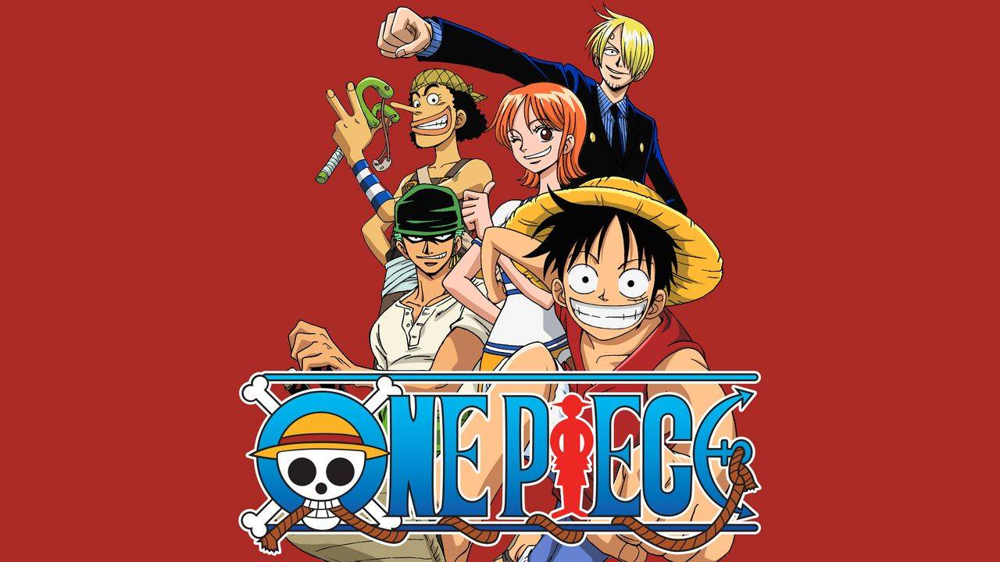

Novidades sobre o universo de One Piece

Entenda por que Barba Negra vai ser o inimigo mais forte que Luffy já enfrentou na história de One Piece...ver mais

One Piece: Mangá confirma verdadeira história por trás da destruição do lar de Robin...ver mais